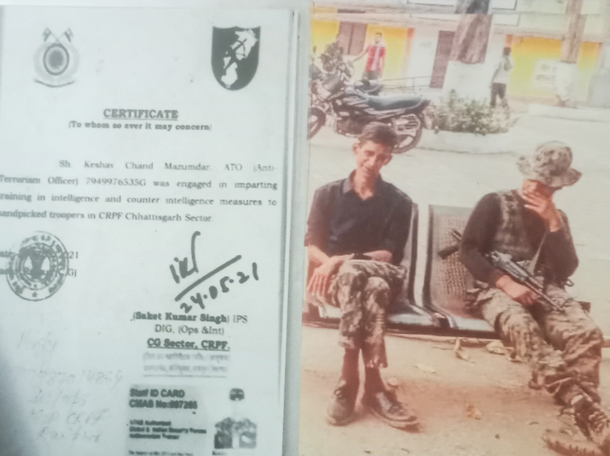
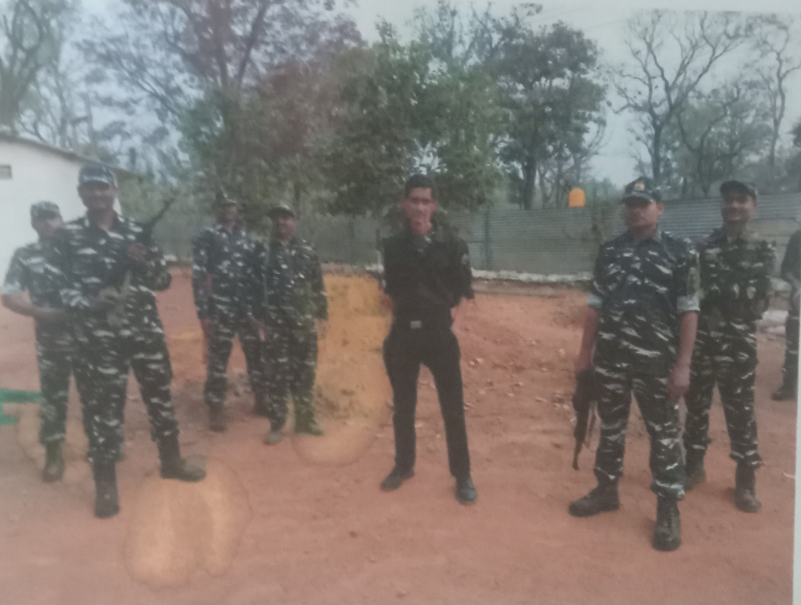

Combat Forces Education & Tactical Intelligence
KESHAV CHANDRA MAZUMDAR
Military Intelligence Instructor • Warfare Designer • Counter-Terrorism Strategist • Author
“I would like to place on record the pathbreaking work done by Shri Keshav Chandra Mazumdar. He has single handedly given the Armed Forces of India a Battle Advisory System on Intelligence appreciation in the form of a ‘Virtual Intelligence Staff Officer’ to the Commander... I am convinced that this will enhance the efficacy of operations of the Armed Forces, will remove uncertainties and minimise casualties. It will ensure the optimum utilisation of Intelligence as a winning tool to enhance success in entire spectrum of conflict cycle.”
In an official record issued from Raj Bhavan, Aizawl (dated 23/09/2025), His Excellency General (Dr) V. K. Singh—26th Chief of the Army Staff of the Indian Army and Governor of Mizoram—noted that the Virtual Staff Officer (titled ‘Warlens Fury’, portraying intelligence as active combat) passed all functionality tests. The citation highlights its capability to advise commanders across LWE zones, hybrid warfare, and NATO-defined cognitive warfare.
০১ / নির্বাহী প্রোফাইল এবং মাঠপর্যায়ের অপারেশন
সামরিক গোয়েন্দা ও ক্ষেত্রভিত্তিক মোতায়েন
প্রায় ২৮ বছরেরও বেশি গ্লোবাল অপারেশনাল এবং শিক্ষণীয় অভিজ্ঞতার অধিকারী কেশব চন্দ্র মজুমদার অপ্রতিসম যুদ্ধ (Asymmetric Warfare), মানব বুদ্ধিমত্তা (HUMINT), প্রতি-গোয়েন্দা (Counter-intelligence) এবং বিশেষ অভিযানে বিশেষজ্ঞ। একজন অগ্রগামী বহিরাগত কৌশলগত প্রশিক্ষক হিসেবে তিনি অভিজাত বিশেষ বাহিনীগুলোকে প্রশিক্ষণ দিয়েছেন এবং মাঠপর্যায়ে সরাসরি অপারেশন পরিচালনা করেছেন।

ATO শংসাপত্র ও ফিল্ড অপারেটিভ ট্রেনিং

কম্ব্যাট সিকিউরিটি এলিমেন্ট ও প্রোটেকশন টাস্ক ফোর্সের ছবি
০২ / যুদ্ধকৌশল মতবাদ ও সিস্টেম
সক্রিয় যুদ্ধ ব্যবস্থা হিসেবে গোয়েন্দাগিরি
প্রথাগত সামরিক মতবাদকে চ্যালেঞ্জ করে কেশব প্রমাণ করেছেন যে সামরিক গোয়েন্দাগিরি হলো যুদ্ধের একটি সক্রিয় ব্যবস্থা—যা ডেডিকেটেড আক্রমণাত্মক কৌশল, বল-সুরক্ষা প্রোটোকল এবং যুদ্ধক্ষেত্রের দ্রুত সিদ্ধান্ত গ্রহণের পরিকাঠামো দ্বারা সুসজ্জিত।
প্রজেক্ট আর্মি XXII এবং অর্গানিক নোড
যুদ্ধ ব্যাটালিয়নগুলোর ঠিক ভেতরে বহুবিষয়ক গোয়েন্দা উপ-ইউনিটগুলোকে যুক্ত করার জন্য ২০১৮ সালে এটি কল্পনা করা হয়েছিল। ২০২১ সালের মে মাসে ছত্তিশগড়ের বিজাপুরে সিআরপিএফ-এর জন্য একটি কৌশলগত গোয়েন্দা অপারেশন নোড হিসেবে সফলভাবে মোতায়েন করা হয়েছিল।
ভার্চুয়াল ইন্টেলিজেন্স স্টাফ অফিসার
একটি উন্নত যুদ্ধ উপদেষ্টা সিস্টেম (‘Warlens Fury’) যা জটিল যুদ্ধক্ষেত্রের ইনপুটগুলোকে একত্রিত করতে এবং সামরিক অভিযানের সময় কমান্ডারদের রিয়েল-টাইম গোয়েন্দা মূল্যায়ন প্রদান করতে প্রকৌশলী করা হয়েছে।
মতবাদগত সংগ্রহ এবং বৈশ্বিক প্রভাব
তিনি ২৬ থেকে ৩২টি সামরিক ফিল্ড ম্যানুয়াল এবং ১৪৫,০০০+ পৃষ্ঠারও বেশি কৌশলগত গবেষণার রচয়িতা। মিত্র সামরিক কমান্ডগুলোর পক্ষ থেকে জীবন বাঁচানোর স্বীকৃতিস্বরূপ আনুষ্ঠানিক পত্র রয়েছে।
০৩ / শংসাপত্র ও শাসনব্যবস্থা
একাডেমিক যোগ্যতা ও আন্তর্জাতিক বোর্ড
একাডেমিক ডিগ্রি এবং ফেলোশিপ
- ফেলো: নিউ ওয়েস্টমিনস্টার কলেজ, ব্রিটিশ কলাম্বিয়া, কানাডা (জুলাই ২০১২)।
- অ্যাসোসিয়েট ডিগ্রি: মিলিটারি সায়েন্স (সামরিক বিজ্ঞান)।
- ডিপ্লোমা: ক্রিমিনোলজি (স্টোনব্রিজ অ্যাসোসিয়েটেড কলেজ, ইউকে) এবং ক্রিমিনাল প্রোফাইলিং (ভারত)।
বৈশ্বিক প্রতিরক্ষা নিয়োগ
- ATAB: অ্যান্টি-টেররিজম অ্যাক্রেডিটেশন বোর্ড, ইউএসএ-এর সাবেক সিনিয়র ভাইস প্রেসিডেন্ট।
- পরামর্শদাতা: RIEAS (গ্রীস) এবং ইউরোপিয়ান ইন্টেলিজেন্স একাডেমির উপদেষ্টা।
- স্বীকৃতি: গ্রীসের ঊর্ধ্বতন ফ্ল্যাগ অফিসারদের দ্বারা সম্মানিত, যিনি ‘কিং আলেকজান্ডারের আত্মা’ ধারণ করেন।
০৪ / অফিসিয়াল যাচাইকরণ
অফিসিয়াল স্পষ্টীকরণ ও পুলিশ চূড়ান্ত প্রতিবেদন
কলকাতার সল্টলেকের বিধাননগরে সিআরপিএফ সুবিধার একটি মিথস্ক্রিয়া সম্পর্কিত ঐতিহাসিক ওয়েব এন্ট্রিগুলো সম্পর্কে: অফিসিয়াল বিচারিক রেকর্ডগুলো প্রতিষ্ঠা করে যে সমস্ত অভিযোগ সম্পূর্ণ ভিত্তিহীন ছিল এবং আনুষ্ঠানিকভাবে একটি ‘ভুল তথ্য’ (Mistake of Fact) হিসেবে বন্ধ করা হয়েছিল।
অফিসিয়াল পুলিশ ফাইনাল রিপোর্ট (FRMF No. 06/19, Dt. 31.01.2019) — সম্পূর্ণ অব্যাহতি
পুলিশের চূড়ান্ত প্রতিবেদনের সারসংক্ষেপ
- সিআরপিএফ ক্যাম্পে কোনো অনধিকার প্রবেশ ঘটেনি; সেন্ট্রি কর্মীরা সরাসরি আইজিপি অফিসে পরিদর্শকদের নিয়ে গিয়েছিলেন।
- উপস্থাপিত সমস্ত পরিচয়পত্র সম্পূর্ণরূপে খাঁটি হিসেবে যাচাই করা হয়েছিল, যা শ্রী মজুমদারকে একজন সন্ত্রাসবিরোধী অফিসার হিসেবে স্বীকৃতি দেয়।
- নিরাপত্তা বাহিনীর জন্য যুদ্ধ কৌশল অধ্যয়নের একটি প্রকল্প নিয়ে আলোচনার জন্যই এই পরিদর্শন করা হয়েছিল।
- তদন্তকারী কর্মকর্তা নিশ্চিত করেছেন যে কোনো অপরাধ সংঘটিত হয়নি, সম্পূর্ণ প্রাতিষ্ঠানিক ছাড়পত্র দিয়ে মামলাটি বন্ধ করা হয়েছে।
০৫ / ঐতিহ্য ও জীবনদর্শন
পারিবারিক ঐতিহ্য ও অপারেশনাল দর্শন
সর্বোচ্চ সততার যুদ্ধ-স্নাতক ভারতীয় সেনা কর্মকর্তা প্রয়াত ক্যাপ্টেন ডি. এন. মজুমদার-এর সুযোগ্য পুত্র, কেশব চন্দ্র মজুমদার জাতীয় নিরাপত্তা এবং সৈনিকদের সুরক্ষার জন্য আজীবন উৎসর্গীকৃত।
“যদি জ্ঞান একটি সেনার জীবন বাঁচাতে পারে, তবে সেই জ্ঞান অবশ্যই বিকাশ করতে হবে, ভাগ করে নিতে হবে এবং ব্যবহার করতে হবে।”